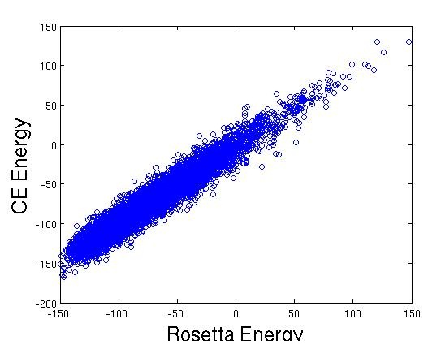

Cluster Expansion Tutorial
In this tutorial, we will train and test an energy estimator for
energies of dimeric coiled coils using cluster expansion. For details
on coiled-coil structure, please see the accompanying paper. Read
through the documentation before running this tutorial.
Go to the clever1.0/test/tutorial directory, where the following tutorial files are provided:
coiled_coil_design.dat
train3000.seq
train3000_en.seq
test7000.seq
test7000_en.seq
coiled_coil1.log
coiled_coil_energies.txt
To check the scripts are properly working, compare the train3000.seq,
test7000.seq, and coiled_coil_energies.txt you generate below to the
ones already provided.
Note: you
should make backup copies of these 3 files with different names,
otherwise they will be overwritten by the files you generate.
A quick way to check whether there are any differences between your
generated file and the provided file is with the diff command (usage:
“diff file1 file2”).
A) Training (GenSeqs and CETrFile)
To train an energy estimator using cluster expansion, we need a design
file (coiled_coil_design.dat) and a sequence file (train3000.seq).
The design file is user-defined. It defines what amino acids are
allowed at each design site, and what clusters (single, pair,
higher...) to consider in the training. In the case of a dimeric coiled
coil, the clusters are also related by symmetry.
The sequence file can either be provided by the user, or created by GenSeqs starting from the design file:
1> GenSeqs -n 3000 -d coiled_coil_design.dat -s train3000.seq
From the design file coiled_coil_design.dat, GenSeqs creates 3000
random sequences with energy 0. Sequences are stored in train3000.seq.
To get protein energy (or whatever quantity is being fit) for each
sequence, we must run an external script. The final sequence file
containing both sequence and associated structure derived energies is
already provided (train3000_en.seq).
With the design file and sequence file, we now run CETrFile and train an energy estimator using cluster expansion:
2> CETrFile -d coiled_coil_design.dat -s train3000_en.seq -n 1000 -b 1 -t 1 -l coiled_coil1.log -r training1.result
training1.result contains the trained CE and coiled_coil1.log contains
details from the training procedure. The “-n” option sets the number of
training set sequences to use, the “-b” option sets the d parameter
used for cluster function screening, and the “-t” option sets how to
deal with triplet cluster functions.
We can train the energy estimator in other ways. The next two commands
take longer to run and do not need to be run to complete this tutorial.
In the following command, default parameters are used (all training sequences used and d factor 0).
CETrFile -d coiled_coil_design.dat -s train3000_en.seq -l coiled_coil2.log -r training2.result
If during training we want to remove 5 sequence groups containing cluster functions with the highest NH-ratio, we run:
CETrFile -d coiled_coil_design.dat -s train3000_en.seq -l coiled_coil3.log -e 5 -r training3.result
B) Testing (GenSeqs and CEEnergy)
Now that we have trained an energy estimator (training1.result) for
dimeric coiled coils, we can use it to evaluate energies of new
sequences.
To generate a test set, we again use GenSeqs. Adding the -o option
generates a set of sequences (test7000.seq) independent of those found
in the training set, meaning no test set sequence will have already
been used in the training set.
3> GenSeqs -n 7000 -o train3000.seq -d coiled_coil_design.dat -s test7000.seq
Now with CEEnergy we can use the trained energy estimator from command 2> to evaluate test sequences.
4> CEEnergy -r training1.result -s test7000_en.seq -l coiled_coil_energies.txt -i 1
test7000_en.seq contains the structure derived energies for
test7000.seq. The CE energies can be compared to the energies
calculated by the structure based energy function by plotting the two
columns in coiled_coil_energies.txt against one another.
